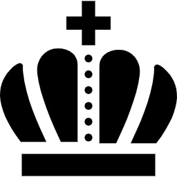

On the Subject of Trajectory
It’s like a rainbow etch-a-sketch but broken.
- There are 3 spinning images in the middle of the module, each colored in red, blue, and green. They will fade in and fade out in order.
- However, you can only see the images through a trajectory of your cursor. The trajectory will only appear when the module is selected and will disappear in a short time.
- Identify the images and locate them in the table below.
- Pressing the status light will open the configuration display. To close the display, either deselect the display or press the cross on the top right corner.
- Each button will move 2 of the colors to an orthogonally adjacent cell in a specific direction in the table below, while also changing the direction of the rotation of the other color. The table wraps around.
- To solve the module, press the buttons such that in a way all colors have the same cell while rotating in the same direction, then press submit. If you submit when at least one of them is in a different cell or has a different rotation, the module will strike.
- Pressing reset will reset all colors to the initial position and rotation.
 |
 |
 |
|
 |
 | ||
 |
 |
||
 |
 |
 |